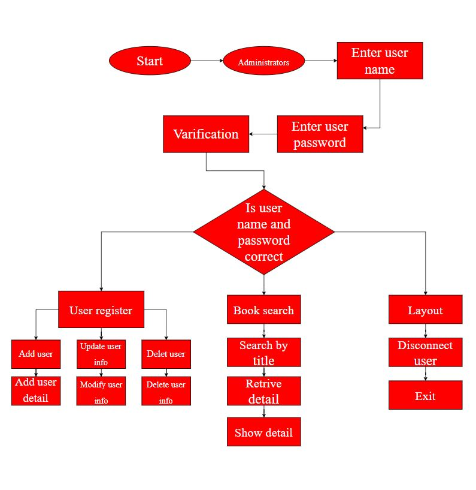

A Library Management System is a software built to handle the primary housekeeping functions of a library. Libraries rely on library management systems to manage asset collections as well as relationships with their members.
Refer following flow chart for more information about liabrary management system
